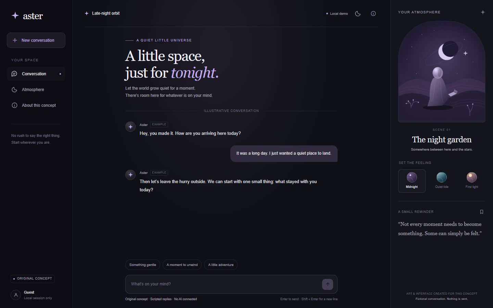

01
Conversation interface
Aster
A quiet conversation space with three visual atmospheres, original SVG scenery and a responsive layout. The local interactions work; dialogue is a scripted preview.
Desktop + mobileKeyboard controlsOriginal artwork

